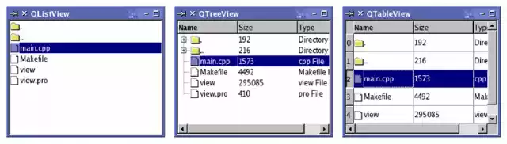
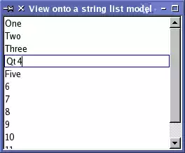
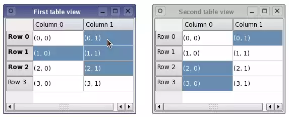
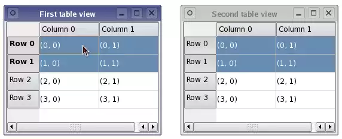

Qt 4推出了一组新的item view类，它们使用model/view结构来管理数据与表示层的关系。这种结构带来的
功能上的分离给了开发人员更大的弹性来定制数据项的表示，它也提供一个标准的model接口，使得更多的
数据源可以被这些item view使用。这里对model/view的结构进行了描述，结构中的每个组件都进行了解释，
给出了一些例子说明了提供的这些类如何使用。
Model/View 结构
Model-View-Controller(MVC)， 是从Smalltalk发展而来的一种设计模式，常被用于构建用户界面。经典设计模式的著作中有这样的描述：
MVC 由三种对象组成。Model是应用程序对象，View是它的屏幕表示，Controller定义了用户界面如何对用户输入进行响应。在MVC之前，用户界面设计倾向于三者揉合在一起，MVC对它们进行了解耦，提高了灵活性与重用性。
假如把 view与controller结合在一起，结果就是model/view结构。这个结构依然是把数据存储与数据表示进行了分离，它与MVC都基于同样的 思想，但它更简单一些。这种分离使得在几个不同的view上显示同一个数据成为可能，也可以重新实现新的view,而不必改变底层的数据结构。为了更灵活 的对用户输入进行处理，引入了delegate这个概念。它的好处是，数据项的渲染与编程可以进行定制。

如上图所示，model与数据源通讯，并提供接口给结构中的别的组件使用。通讯的性质依赖于数据源的种类
与model实现的方式。view从model获取model indexes,后者是数据项的引用。通过把model indexes提供给model,view可以从数据源中获取数据。
在标准的 views中，delegate会对数据项进行渲染，当某个数据项被选中时，delegate通过model indexes与model直接进行交流。总的来说，model/view 相关类可以被分成上面所提到的三组：models,views,delegates。这些组件通过抽象类来定义，它们提供了共同的接口，在某些情况下，还 提供了缺省的实现。抽象类意味着需要子类化以提供完整的其他组件希望的功能。这也允许实现定制的组件。models,views,delegates之间 通过信号，槽机制来进行通讯：
从model发出的信号通知view数据源中的数据发生了改变。
从view发出的信号提供了有关被显示的数据项与用户交互的信息。
从delegate发生的信号被用于在编辑时通知model和view关于当前编辑器的状态信息。
Models
所有的item models都基于QAbstractItemModel类，这个类定义了用于views和delegates访问数据的接口。
数据本身不必存储在model,数据可被置于一个数据结构或另外的类，文件，数据库，或别的程序组件中。
关于model的基本概念在Model Classes部分中描述。
QAbstractItemModel提供给数据一个接口，它非常灵活，基本满足views的需要，无论数据用以下任何样的形式
表现，如tables,lists,trees。然而，当你重新实现一个model时，如果它基于table或list形式的数据结构，最好从QAbstractListModel,QAbstractTableModel开始做起，因为它们提供了适当的常规功能的缺省实现。这些类可以被子类化以支持特殊的定制需求。子类化model的过程在Create New Model部分讨论
QT提供了一些现成的models用于处理数据项：
QStringListModel 用于存储简单的QString列表。
QStandardItemModel 管理复杂的树型结构数据项，每项都可以包含任意数据。
QDirModel 提供本地文件系统中的文件与目录信息。
QSqlQueryModel, QSqlTableModel,QSqlRelationTableModel用来访问数据库。
假如这些标准Model不满足你的需要，你应该子类化QAbstractItemModel,QAbstractListModel或是
QAbstractTableModel来定制。
Views
不同的view都完整实现了各自的功能：QListView把数据显示为一个列表，QTableView把Model 中的数据以table的形式表现，QTreeView 用具有层次结构的列表来显示model中的数据。这些类都基于QAbstractItemView抽象基类，尽管这些类都是现成的，完整的进行了实现，但它们都可以用于子类化以便满足定制需求。
Delegates
QAbstractItemDelegate 是model/view架构中的用于delegate的抽象基类。缺省的delegate实现在QItemDelegate类中提供。它可以用于Qt标准views的缺省 delegate.
排序
在model/view架构中，有两种方法进行排序，选择哪种方法依赖于你的底层Model。
假如你的model是可排序的，也就是它重新实现了QAbstractItemModel::sort()函数，QTableView与QTreeView都提供了API,允许你以编程的方式对Model数据进行排序。另外，你也可以进行交互方式下的排序（例如，允许用户通过点击view表头的方式对数据进行排序），可以这样做：把QHeaderView::sectionClicked()信号与QTableView::sortByColum()槽或QTreeView::sortByColumn()槽进行联结就好了。
另一种方法是，假如你的model没有提供需要的接口或是你想用list view表示数据，可以用一个代理
model在用view表示数据之前对你的model数据结构进行转换。
便利类
许多便利类都源于标准的view类，它们方便了那些使用Qt中基于项的view与table类，它们不应该被子类化，
它们只是为Qt 3的等价类提供一个熟悉的接口。这些类有QListWidget,QTreeWidget,QTableWidget,它们提供了如Qt 3中的QListBox, QlistView,QTable相似的行为。这些类比View类缺少灵活性，不能用于任意的models,推介使用model/view的方法处理数据。
-----------------------------------------------------------------------------------------------------------------------------------------------------------
介绍
Qt提供了两个标准的models:QStandardItemModel和QDirModel。QStandardItemModel是一个多用途的
model，可用于表示list,table,tree views所需要的各种不同的数据结构。这个model也持有数据。QDirModel
维护相关的目录内容的信息，它本身不持有数据，仅是对本地文件系统中的文件与目录的描述。
QDirModel是一个现成的model,很容易进行配置以用于现存的数据，使用这个model,可以很好地展示如何
给一个现成的view设定model,研究如何用model indexes来操纵数据。
model与views的搭配使用
QListView与QTreeView很适合与QDirModel搭配。下面的例子在tree view与list view显示了相同的信息，QDirModel提供了目录内容数据。这两个Views共享用户选择，因此每个被选择的项在每个view中都会被高亮。

先装配出一个QDirModel以供使用，再创建views去显示目录的内容。这给我展示了使用model的最简单的方式。
model的创建与使用都在main()函数中完成：
int main(int argc, char *argv[])
{
QApplication app(argc, argv);
QSplitter *splitter = new QSplitter;
QDirModel *model = new QDirModel;
//从缺省目录创建数据
QTreeView *tree = new QTreeView(splitter);
tree->setModel(model);
tree->setRootIndex(model->index(QDir::currentPath()));
QListView *list = new QListView(splitter);
list->setModel(model);
list->setRootIndex(model->index(QDir::currentPath()));
//配置一个view去显示model中的数据，只需要简单地调用setModel(),并把目录model作为参数传递
//setRootIndex()告诉views显示哪个目录的信息，这需要提供一个model index,然后用这个
//model index去model中去获取数据
//index()这个函数是QDirModel特有的，通过把一个目录做为参数，得到了需要的model index
//其他的代码只是窗口show出来,进入程序的事件循环就好了
splitter->setWindowTitle("Two views onto the same directory model");
splitter->show();
return app.exec();
}
-----------------------------------------------------------------------------------------------------------------------------------------------------------
Model类
基本概念
在model/view构架中，model为view和delegates使用数据提供了标准接口。在Qt中，标准接口QAbstractItemModel类中被定义。不管数据在底层以何种数据结构存储，QAabstractItemModel的子类会以层次结构的形式来表示数据，结构中包含了数据项表。我们按这种约定来访问model中的数据项，但这个约定不会对如何显示这些数据有任何限制。数据发生改变时，model通过信号槽机制来通知关联的views。
Model Indexes
为了使数据存储与数据访问分开，引入了model index的概念。通过model index，可以引用model中的数据项，Views和delegates都使用indexes来访问数据项，然后再显示出来。因此，只有model需要了解如何获取数据，被model管理的数据类型可以非常广泛地被定义。Model indexes包含一个指向创建它们的model的指针，这会在配合多个model工作时避免混乱。
QAbstractItemModel *model = index.model();
model indexes提供了对一项数据信息的临时引用，通过它可以访问或是修改model中的数据。既然model有时会重新组织内部的数据结构，这时 model indexes便会失效，因此不应该保存临时的model indexes。假如需要一个对数据信息的长期的引用，那么应该创建一个persistent model index。这个引用会保持更新。临时的model indexes由QModelIndex提供，而具有持久能力的model indexes则由QPersistentModelIndex提供。在获取对应一个数据项的model index时，需要考虑有关于model的三个属性：行数，列数，父项的model index。
行与列
在最基本的形式中，一个model可作为一个简单的表来访问，每个数据项由行，列数来定位。这必不意味着
底层的数据用数组结构来存储。行和列的使用仅仅是一种约定，它允许组件之间相互通讯。可以通过指定
model中的行列数来获取任一项数据，可以得到与数据项一一对应的那个index。
QModelIndex index = model->index(row, column, ...);
Model为简单的，单级的数据结构如list与tables提供了接口，它们如上面代码所显示的那样，不再需要别的信息被提供。当我们在获取一个model index时，我们需要提供另外的信息。
上图代表一个基本的table model，它的每一项用一对行列数来定位。通过行列数，可以获取代表一个数据项的model index .
QModelIndex indexA = model->index(0, 0, QModelIndex());
QModelIndex indexB = model->index(1, 1, QModelIndex());
QModelIndex indexC = model->index(2, 1, QModelIndex());
一个model的顶级项,由QModelIndex()取得，它们上式被用作父项。
父项
类似于表的接口在搭配使用table或list view时理想的，这种行列系统与view显示的方式是确切匹配的。
然则，像tree views这种结构需要model提供更为灵活的接口来访问数据项。每个数据项可能是别的项的
父项，上级的项可以获取下级项的列表。
当获取model中数据项的index时，我们必须指定关于数据项的父项的信息。在model外部，引用一个数据
项的唯一方法就是通过model index,因此需要在求取model index时指定父项的信息。
QModelIndex index = model->index(row, column, parent);
上图中，A项和C项作为model中顶层的兄弟项：
QModelIndex indexA = model->index(0, 0, QModelIndex());
QModelIndex indexC = model->index(2, 1, QModelIndex());
A有许多孩子，它的一个孩子B用以下代码获取：
QModelIndex indexB = model->index(1, 0, indexA);
项角色
model 中的项可以作为各种角色来使用，这允许为不同的环境提供不同的数据。举例来说，Qt::DisplayRole被用于访问一个字符串，它作为文本会在 view中显示。典型地，每个数据项都可以为许多不同的角色提供数据，标准的角色在Qt::ItemDataRole中定义。我们可以通过指定model index与角色来获取我们需要的数据：
QVariant value = model->data(index, role);
角色指出了从model中引用哪种类型的数据。views可以用不同的形式显示角色，因此为每个角色提供正确
的信息是非常重要的。通过为每个角色提供适当数据，model也为views和delegates提供了暗示，如何正确地
把这些数据项显给用户。不同的views可以自由地解析或忽略这些数据信息，对于特殊的场合，也可以定义
一些附加的角色。
概念总结：
1，Model indexes为views与delegages提供model中数据项定位的信息，它与底层的数据结构无关。
2，通过指定行，列数，父项的model index来引用数据项。
3,依照别的组件的要求，model indexes被model构建。
4，使用index()时，如果指定了有效的父项的model index,那么返回得到的model index对应于父项的某个孩子。
5，使用index()时，如果指定了无效的父项的model index,那么返回得到的model index对应于顶层项的某个孩子。
6, 角色对一个数据项包含的不同类型的数据给出了区分。
使用Model Indexes
QDirModel *model = new QDirModel;
QModelIndex parentIndex = model->index(QDir::currentPath());
int numRows = model->rowCount(parentIndex);
for (int row = 0; row < numRows; ++row)
{
QModelIndex index = model->index(row, 0, parentIndex);
tring text = model->data(index, Qt::DisplayRole).toString();
// Display the text in a widget.
}
以上的例子说明了从model中获取数据的基本原则：
1，model的尺寸可以从rowCount()与columnCount()中得出。这些函数通常都需要一个表示父项的model index。
2，model indexes用来从model中访问数据项，数据项用行，列，父项model index定位。
3, 为了访问model顶层项，可以使用QModelIndex()指定。
4, 数据项为不同的角色提供不同的数据。为了获取数据，除了model index之外，还要指定角色。
------------------------------------------------------------------------------------------------------------------------
Qt Model/View 学习笔记 (四)
创建新的Models
介绍
model/view组件之间功能的分离，允许创建model利用现成的views。这也可以使用标准的功能 图形用户接口组件像QListView,QTableView和QTreeView来显示来自各种数据源的数据为。
QAbstractListModel类提供了非常灵活的接口，允许数据源以层次结构的形式来管理信息，也允许以某种
方式对数据进行插入、删除、修改和存储。它也提供了对拖拽操作的支持。
QAbstractListModel与QAbstractTableModel为简单的非层次结构的数据提供了接口，对于比较简单的list和table models来说，这是不错的一个开始点。
设计一个Model
当我们为存在的数据结构新建一个model时，首先要考虑的问题是应该选用哪种model来为这些数据提供接口。
假如数据结构可以用数据项的列表或表来表示，那么可以考虑子类化QAbstractListModel或QAbstractTableModel
,既然这些类已经合理地对许多功能提供缺省实现。
然而，假如底层的数据结构只能表示成具有层次结构的树型结构，那么必须得子类化QAbstractItemModel。
无论底层的数据结构采取何种形式，在特定的model中实现标准的QAbstractItemModel API总是一个不错的主意，这使得可以使用更自然的方式对底层的数据结构进行访问。这也使得用数据构建model 更为容易，其他
的model/view组件也可以使用标准的API与之进行交互。
一个只读model示例
这个示例实现了一个简单的，非层次结构的，只读的数据model,它基于QStringistModel类。它有一个QStringList作为它内部的数据源，只实现了一些必要的接口。为了简单化，它子类化了QAbstractListModel,这个基类提供了合理的缺省行为，对外提供了比QAbstractItemModel更为简单的接口。当我们实现一个model时，不要忘了QAbstractItemModel本身不存储任何数据，它仅仅提供了给views访问
数据的接口。
class StringListModel : public QAbstractListModel
{
Q_OBJECT
public:
StringListModel(const QStringList &strings, QObject *parent = 0)
: QAbstractListModel(parent), stringList(strings) {}
int rowCount(const QModelIndex &parent = QModelIndex()) const;
QVariant data(const QModelIndex &index, int role) const;
QVariant headerData(int section, Qt::Orientation orientation,
int role = Qt::DisplayRole) const;
private:
QStringList stringList;
};
除了构造函数，我们仅需要实现两个函数：rowCount()返回model中的行数，data()返回与特定model index对应的数据项。具有良好行为的model也会实现headerData()，它返回tree和table views需要的，在标题中显示的数据。
因为这是一个非层次结构的model,我们不必考虑父子关系。假如model具有层次结构，我们也应该实现index()与parent()函数。
Model的尺寸
我们认为model中的行数与string list中的string数目一致：
int StringListModel::rowCount(const QModelIndex &parent) const
{
return stringList.count();
}
在缺省情况下，从QAbstractListModel派生的model只具有一列，因此不需要实现columnCount()。
Model 标题与数据
QVariant StringListModel::data(const QModelIndex &index, int role) const
{
if (!index.isValid())
return QVariant();
if (index.row() >= stringList.size())
return QVariant();
if (role == Qt::DisplayRole)
return stringList.at(index.row());
else
return QVariant();
}
QVariant StringListModel::headerData(int section, Qt::Orientation orientation,
int role) const
{
if (role != Qt::DisplayRole)
return QVariant();
if (orientation == Qt::Horizontal)
return QString("Column %1").arg(section);
else
return QString("Row %1").arg(section);
}
一个数据项可能有多个角色，根据角色的不同输出不同的数据。上例中，model中的数据项只有一个角色 ，
DisplayRole,然而我们也可以重用提供给DisplayRole的数据，作为别的角色使用，如我们可以作为ToolTipRole来用。
可编辑的model
上面我们演示了一个只读的model,它只用于向用户显示，对于许多程序来说，可编辑的list model可能更有用。我们只需要给只读的model提供另外两个函数flags()与setData()的实现。下列函数声明被添加到类定义中：
Qt::ItemFlags flags(const QModelIndex &index) const;
bool setData(const QModelIndex &index, const QVariant &value,
int role = Qt::EditRole);
让model可编辑
delegate会在创建编辑器之前检查数据项是否是可编辑的。model必须得让delegate知道它的数据项是可
编辑的。这可以通过为每一个数据项返回一个正确的标记得到，在本例中，我们假设所有的数据项都是
可编辑可选择的：
Qt::ItemFlags StringListModel::flags(const QModelIndex &index) const
{
if (!index.isValid())
return Qt::ItemIsEnabled;
return QAbstractItemModel::flags(index) | Qt::ItemIsEditable;
}
我们不必知道delegate执行怎样实际的编辑处理过程，我们只需提供给delegate一个方法，delegate会使用它对model中的数据进行设置。这个特殊的函数就是setData():
bool StringListModel::setData(const QModelIndex &index,
const QVariant &value, int role)
{
if (index.isValid() && role == Qt::EditRole) {
stringList.replace(index.row(), value.toString());
emit dataChanged(index, index);
return true;
}
return false;
}
当数据被设置后，model必须得让views知道一些数据发生了变化，这可通过发射一个dataChanged() 信号实现。
因为只有一个数据项发生了变化，因此在信号中说明的变化范围只限于一个model index。
插入，删除行
在model中改变行数与列数是可能的。当然在本列中，只考虑行的情况，我们只需要重新实现插入、删除
的函数就可以了，下面应在类定义中声明：
bool insertRows(int position, int rows, const QModelIndex &index = QModelIndex());
bool removeRows(int position, int rows, const QModelIndex &index = QModelIndex());
既然model中的每行对应于列表中的一个string,因此，insertRows()函数在string list 中指定位置插入一个空string,
父index通常用于决定model中行列的位置，本例中只有一个单独的顶级项，困此只需要在list中插入空string。
bool StringListModel::insertRows(int position, int rows, const QModelIndex &parent)
{
beginInsertRows(QModelIndex(), position, position+rows-1);
for (int row = 0; row < rows; ++row) {
stringList.insert(position, "");
}
endInsertRows();
return true;
}
beginInsertRows()通知其他组件行数将会改变。endInsertRows()对操作进行确认与通知。
返回true表示成功。
删除操作与插入操作类似：
bool StringListModel::removeRows(int position, int rows, const QModelIndex &parent)
{
beginRemoveRows(QModelIndex(), position, position+rows-1);
for (int row = 0; row < rows; ++row) {
stringList.removeAt(position);
}
endRemoveRows();
return true;
}
------------------------------------------------------------------------------------------------------
概念
在model/view架构中，view从model中获得数据项然后显示给用户。数据显示的方式不必与model提供的表示方式相同，可以与底层存储数据项的数据结构完全不同。
内容与显式的分离是通过由QAbstractItemModel提供的标准模型接口，由QAsbstractItemview提供的标准视图接口共同实现的。普遍使用model index来表示数据项。view负责管理从model中读取的数据的外观布局。
它们自己可以去渲染每个数据项，也可以利用delegate来既处理渲染又进行编辑。
除了显示数据，views也处理数据项的导航，参与有关于数据项选择的部分功能。view也实现一些基本的用户接口特性，如上下文菜单与拖拽功能。view也为数据项提供了缺省的编程功能，也可搭配delegate实现更为特殊的定制编辑的需求。
一个view创建时必不需要model,但在它能显示一些真正有用的信息之前，必须提供一个model。view通过使用
selections来跟踪用户选择的数据项。每个view可以维护单独使用的selections，也可以在多个views之间共享。有些views,如QTableView和QTreeView,除数据项之外也可显示标题(Headers)，标题部分通过一个view来实现，QHeaderView。标题与view一样总是从相同的model中获取数据。从 model中获取数据的函数是QabstractItemModel::headerDate()，一般总是以表单的形式中显示标题信息。可以从QHeaderView子类化，以实现更为复杂的定制化需求。
使用现成的view
Qt提供了三个现成的view 类，它们能够以用户熟悉的方式显示model中的数据。QListView把model中的数据项以一个简单的列表的形式显示，或是以经典的图标视图的形式显示。QTreeView把model中的数据项作为具有层次结构的列表的形式显示，它允许以紧凑的深度嵌套的结构进行显示。QTableView却是把model中的数据项以表格的形式展现，更像是一个电子表格应用程序的外观布局。

以上这些标准view的行为足以应付大多数的应用程序，它们也提供了一些基本的编辑功能，也可以定制特殊的需求。
使用model
以前的例子中创建过一个string list model,可以给它设置一些数据，再创建一个view把model中的内容展示出来：
int main(int argc, char *argv[])
{
QApplication app(argc, argv);
// Unindented for quoting purposes:
QStringList numbers;
numbers << "One" << "Two" << "Three" << "Four" << "Five";
QAbstractItemModel *model = new StringListModel(numbers);
//要注意的是，这里把StringListModel作为一个QAbstractItemModel来使用。这样我们就可以
//使用model中的抽象接口，而且如果将来我们用别的model代替了当前这个model,这些代码也会照样工作。
//QListView提供的列表视图足以满足当前这个model的需要了。
QListView *view = new QListView;
view->setModel(model);
view->show();
return app.exec();
}

view会渲染model中的内容，通过model的接口来访问它的数据。当用户试图编辑数据项时，view会使用缺省的delegate来提供一个编辑构件。
一个model,多个views
为多个views提供相同的model是非常简单的事情，只要为每个view设置相同的model。
QTableView *firstTableView = new QTableView;
QTableView *secondTableView = new QTableView;
firstTableView->setModel(model);
secondTableView->setModel(model);
在model/view架构中信号、槽机制的使用意味着model中发生的改变会传递中联结的所有view中，这保证了
不管我们使用哪个view，访问的都是同样的一份数据。

上面的图展示了一个model上的两个不同的views,尽管在不同的view中显示的model中的数据是一致的，每个
view都维护它们自己的内部选择模型，但有时候在某些情况下，共享一个选择模型也是合理的。
处理数据项的选择
view中数据项选择机制由QItemSelectionModel类提供。所有标准的view缺省都构建它们自己的选择模型，
以标准的方式与它们交互。选择模型可以用selectionModel()函数取得，替代的选择模型也可以通过
setSelectionModel()来设置。当我们想在一个model上提供多个一致的views时，这种对选择模型的控制能力非常有用。通常来讲，除非你子类化一个model或view,你不必直接操纵selections的内容。
多个views之间共享选择
接着上边的例子，我们可以这样：
secondTableView->setSelectionModel(firstTableView->selectionModel());
现在所有views都在同样的选择模型上操作，数据与选择项都保持同步。

上面的例子中，两个view的类型是相同的，假如这两个view类型不同，那么所选择的数据项在每个view
中的表现形式会有很大的不同。例如，在一个table view中一个连续的选择，在一个tree view中表现出
来的可能会是几个高亮的数据项片断的组合。